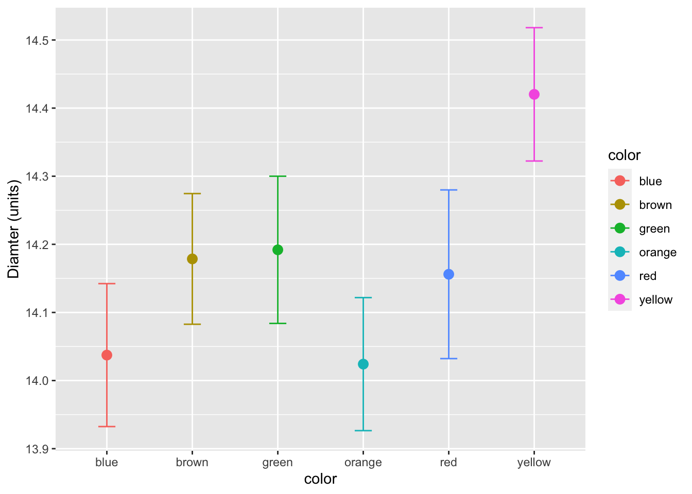
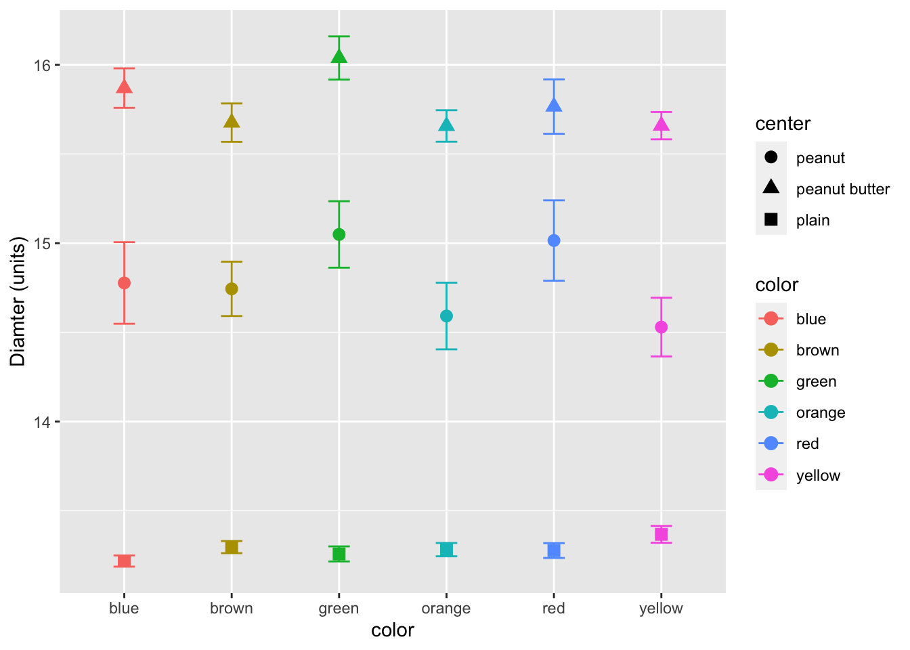
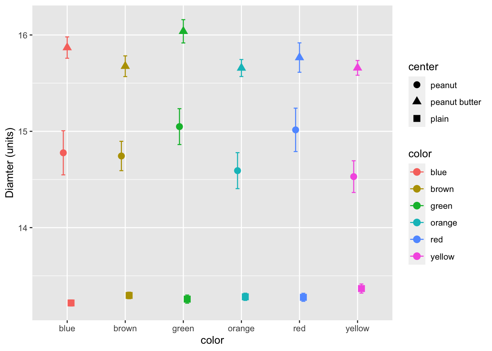

# load the libraries each time you restart R
library("readxl") # read in excel files
library("skimr") # quick summary stats
library("janitor") # clean up excel imports
library("patchwork") # multipanel graphs
library(skimr) # great way to do summary stats
library("lubridate") # dates and times
library("scales") # scales on ggplot ases
library("tidyverse") # dplyr and piping and ggplot etcGGPlot summary plots
Objective
How to read in excel file and plot the data using GGPlot.
Data for the exercise
This page has a link to all of the data files
We will use a mock data file that uses M&M’s
M&M CSV file and also the M&M Excel file
Load Libraries
##Read files
# Note you can read in excel files just as easy
mm.df <- read_excel("../data/mms.xlsx")
head(mm.df)# A tibble: 6 × 4
center color diameter mass
<chr> <chr> <dbl> <dbl>
1 peanut butter blue 16.2 2.18
2 peanut butter brown 16.5 2.01
3 peanut butter orange 15.5 1.78
4 peanut butter brown 16.3 1.98
5 peanut butter yellow 15.6 1.62
6 peanut butter brown 17.4 2.59Summary Stats
Lets look at a few ways to get summary statistics The first is the simplist and uses base R
summary(mm.df) center color diameter mass
Length:816 Length:816 Min. :11.23 Min. :0.72
Class :character Class :character 1st Qu.:13.22 1st Qu.:0.86
Mode :character Mode :character Median :13.60 Median :0.92
Mean :14.17 Mean :1.42
3rd Qu.:15.30 3rd Qu.:1.93
Max. :17.88 Max. :3.62 A better way is using Skimr
mm.df %>%
skim()| Name | Piped data |
| Number of rows | 816 |
| Number of columns | 4 |
| _______________________ | |
| Column type frequency: | |
| character | 2 |
| numeric | 2 |
| ________________________ | |
| Group variables | None |
Variable type: character
| skim_variable | n_missing | complete_rate | min | max | empty | n_unique | whitespace |
|---|---|---|---|---|---|---|---|
| center | 0 | 1 | 5 | 13 | 0 | 3 | 0 |
| color | 0 | 1 | 3 | 6 | 0 | 6 | 0 |
Variable type: numeric
| skim_variable | n_missing | complete_rate | mean | sd | p0 | p25 | p50 | p75 | p100 | hist |
|---|---|---|---|---|---|---|---|---|---|---|
| diameter | 0 | 1 | 14.17 | 1.22 | 11.23 | 13.22 | 13.60 | 15.30 | 17.88 | ▁▇▂▃▁ |
| mass | 0 | 1 | 1.42 | 0.71 | 0.72 | 0.86 | 0.92 | 1.93 | 3.62 | ▇▂▂▂▁ |
The cool part of skimr is that you can do groups
mm.df %>%
group_by(center) %>%
skim()| Name | Piped data |
| Number of rows | 816 |
| Number of columns | 4 |
| _______________________ | |
| Column type frequency: | |
| character | 1 |
| numeric | 2 |
| ________________________ | |
| Group variables | center |
Variable type: character
| skim_variable | center | n_missing | complete_rate | min | max | empty | n_unique | whitespace |
|---|---|---|---|---|---|---|---|---|
| color | peanut | 0 | 1 | 3 | 6 | 0 | 6 | 0 |
| color | peanut butter | 0 | 1 | 3 | 6 | 0 | 6 | 0 |
| color | plain | 0 | 1 | 3 | 6 | 0 | 6 | 0 |
Variable type: numeric
| skim_variable | center | n_missing | complete_rate | mean | sd | p0 | p25 | p50 | p75 | p100 | hist |
|---|---|---|---|---|---|---|---|---|---|---|---|
| diameter | peanut | 0 | 1 | 14.77 | 0.98 | 12.45 | 14.13 | 14.69 | 15.47 | 17.88 | ▂▇▇▃▁ |
| diameter | peanut butter | 0 | 1 | 15.77 | 0.63 | 13.91 | 15.32 | 15.72 | 16.19 | 17.61 | ▁▅▇▃▁ |
| diameter | plain | 0 | 1 | 13.28 | 0.34 | 11.23 | 13.08 | 13.28 | 13.48 | 14.38 | ▁▁▃▇▁ |
| mass | peanut | 0 | 1 | 2.60 | 0.34 | 1.93 | 2.36 | 2.58 | 2.81 | 3.62 | ▃▇▆▃▁ |
| mass | peanut butter | 0 | 1 | 1.80 | 0.27 | 1.19 | 1.62 | 1.77 | 1.94 | 2.63 | ▂▇▇▂▁ |
| mass | plain | 0 | 1 | 0.86 | 0.05 | 0.72 | 0.83 | 0.87 | 0.89 | 1.01 | ▁▃▇▃▁ |
Finally you can get a summary manually but is a bit longer. These can also be saved into a new dataframe.
mm.df %>%
group_by(center, color) %>%
summarize(mean_diamter = mean(diameter, na.rm=TRUE),
mean_mass = mean(mass, na.rm=TRUE))`summarise()` has grouped output by 'center'. You can override using the
`.groups` argument.# A tibble: 18 × 4
# Groups: center [3]
center color mean_diamter mean_mass
<chr> <chr> <dbl> <dbl>
1 peanut blue 14.8 2.58
2 peanut brown 14.7 2.57
3 peanut green 15.0 2.68
4 peanut orange 14.6 2.57
5 peanut red 15.0 2.63
6 peanut yellow 14.5 2.57
7 peanut butter blue 15.9 1.85
8 peanut butter brown 15.7 1.80
9 peanut butter green 16.0 1.92
10 peanut butter orange 15.7 1.73
11 peanut butter red 15.8 1.74
12 peanut butter yellow 15.7 1.74
13 plain blue 13.2 0.860
14 plain brown 13.3 0.871
15 plain green 13.3 0.870
16 plain orange 13.3 0.865
17 plain red 13.3 0.854
18 plain yellow 13.4 0.865Graphing mean and SE
These are all well and good but looking at a graph is cool.
# now for the plot
ggplot(mm.df, aes(color, diameter, color=color)) +
stat_summary(fun = mean, na.rm = TRUE,
geom = "point",
size = 3) +
stat_summary(fun.data = mean_se, na.rm = TRUE,
geom = "errorbar",
width = 0.2) +
labs(x = "color", y = "Diamter (units)") 
We can also add in shape as a grouping varaible for the center of the m&m’s
# now for the plot
ggplot(mm.df, aes(color, diameter, group=center, shape=center, color=color)) +
stat_summary(fun = mean, na.rm = TRUE,
geom = "point",
size = 3) +
stat_summary(fun.data = mean_se, na.rm = TRUE,
geom = "errorbar",
width = 0.2) +
labs(x = "color", y = "Diamter (units)") 
# now for the plot
ggplot(mm.df, aes(color, diameter, group=center, shape=center, color=color)) +
stat_summary(fun = mean, na.rm = TRUE,
geom = "point",
size = 3,
position= position_dodge(width = 0.2)) +
stat_summary(fun.data = mean_se, na.rm = TRUE,
geom = "errorbar",
width = 0.2,
position= position_dodge(width = 0.2)) +
labs(x = "color", y = "Diamter (units)") 